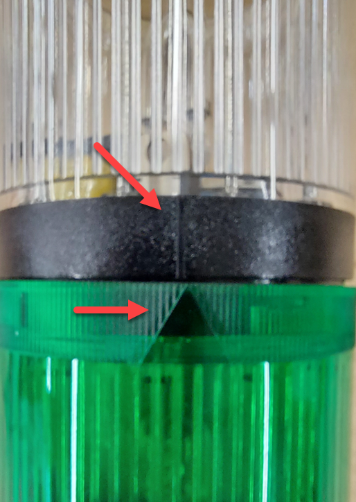
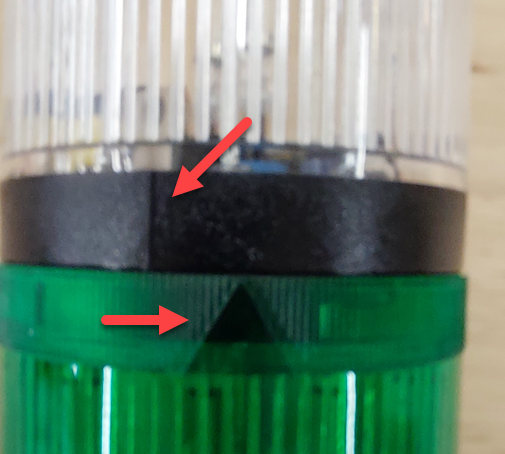
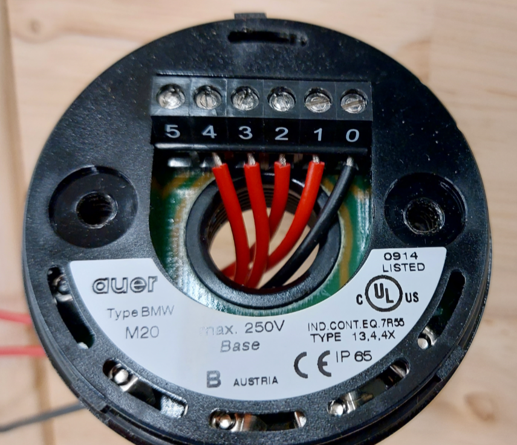

Een signaaltoren staat bovenop een machine en toont van ver in welke toestand ze zit. Groen betekent dat de machine draait, oranje dat er iets aandacht vraagt, rood dat ze stilstaat of in storing is. Sommige torens hebben er nog een zoemer bij. Het is een uitgang zoals een lamp, alleen zit er een afspraak achter de kleur die op elke werkvloer dezelfde is.
De toren in het labo is opgebouwd uit losse modules die je op elkaar stapelt. Onderaan zit de basis met het klemmenblok, daarboven komt module na module, en bovenaan een deksel. Elke module is één kleur en één lamp.
Twee modules klikken niet in elkaar, je draait ze vast. Op elke module staat aan de ene kant een streep en aan de andere kant een pijl:


Een module die niet vergrendeld is, blijft wel rechtstaan maar maakt geen contact. De lamp die je in je programma aanstuurt, blijft dan uit terwijl er niets fout is aan je bedrading.
In de basis zit een ring met genummerde klemmen. Die nummers volgen de stapel van onder naar boven:

Elke module heeft dus één eigen draad, en ze delen allemaal de massa op klem 0. Wil je twee lampen los van elkaar aansturen, dan heb je twee uitgangen van de EL2004 nodig, één per klemnummer. Hang je ze allebei aan dezelfde uitgang, dan gaan ze ook altijd samen aan en uit.
De modules in het labo werken op dezelfde 24 V als de klemmen. Je verbindt een uitgang van de EL2004 met het klemnummer van de module, en klem 0 met de massa van je voeding.
Welke kleur op welk nummer zit, hangt af van de volgorde waarin de toren gestapeld is, en die kan verschillen van opstelling tot opstelling. Tel dus zelf na van onder naar boven in plaats van aan te nemen dat rood altijd op 1 zit.